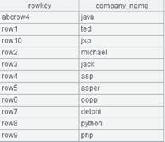
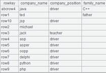

Description:
List the fragmentation information of a specified table with table sequences.
Syntax:
ifx_listfrag(ifxconn, table)
Note:
The external library function lists the fragmentation information of a specified table with table sequences on the condition that the fragmentation information is already written into the ifxconn object. List the fragmentation information all fragmented table being fragmented if parameter table is absent.
Parameters:
|
ifxconn |
The ifxconn object which holds the fragmentation information |
|
table |
A table being fragmented |
Return value:
A table sequence
Example:
|
|
A |
|
|
1 |
="d:/frag1.txt" |
Create and save a fragmentation information file |
|
2 |
=ifx_conn("com.informix.jdbc.IfxDriver","jdbc:informix-sqli:192.168.0.7:8000/tpch:informixserver=tramsserver&user=informix&pwd=informix";A1) |
Connect to Informix database |
|
3 |
=ifx_takefrag(A2) |
Extract the fragmentation information of all specified tables |
|
4 |
=ifx_listfrag(A2) |
List the fragmentation information of all specified tables  |
|
5 |
= ifx_listfrag(A2,"orders") |
List fragmentation information of the orders table  |